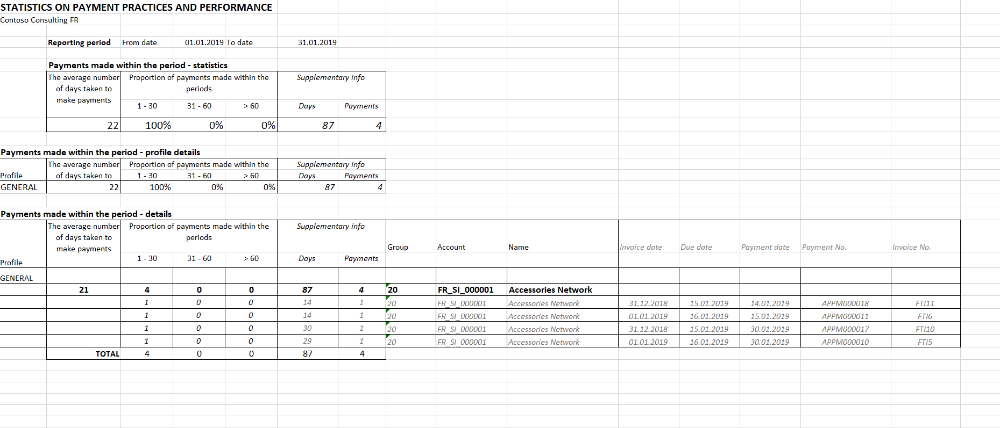
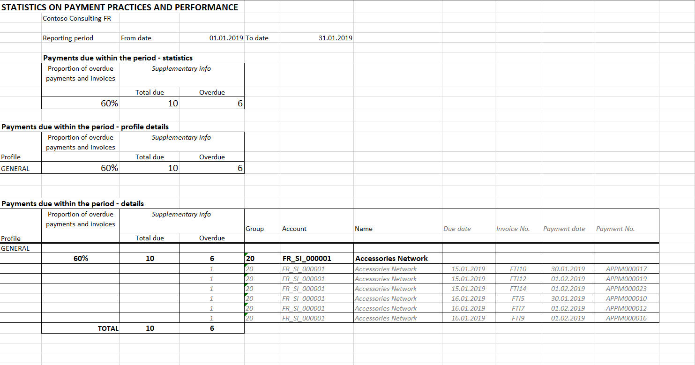

Statistics on payment practices report
In the scope of reporting requirements, businesses in the United Kingdom (UK) must prepare and publish, for each reporting period in the financial year, information about their payment practices and performance as they are related to qualifying contracts. The information for each reporting period must reflect the policies and practices that are applied during that period, and the business's performance for that period.
The report must be published on a web-based service that is provided by or on behalf of the government. It must be published within 30 days of the end of the reporting period.
In the scope of report, there are some narrative descriptions of reporting practices. There are also the following three statistics:
- During the reporting period, the average number of days that passed between the date when invoices were received and the date when payments were made (in other words, the average number of days that was taken to make payments)
- Of the payments that were made during the reporting period, the percentage that were made in 30 days or less, in 31 to 60 days, and in 61 days or more
- Of the payments that were due during the reporting period, the percentage that were not paid according to the agreed-on terms
Report
The Statistics on payment practices (UK) report is exported to Microsoft Excel and has two tabs:
- Payments_made – This tab contains statistics of types 1 and 2 from the previous list. It also contains the details per vendor account. The detailed view also contains the details per payment that was made during a reporting period.
- Payments_due – This tab contains statistics of type 3 from the previous list. It also contains the details per vendor account. The detailed view also contains details per invoice that was due during a reporting period.
Before you use this report, download the latest version of the Statistics on payment practices (UK) Electronic reporting (ER) configuration, the Statistics on invoices ER model, and the Statistics on invoices model mapping ER model mapping.
For more information, see Download Electronic reporting configurations from Lifecycle Services.
Post documents and define the date when the invoice is received
Before you generate the report, post and settle the appropriate invoices and payments. Payments that aren't settled can't be exported to the Payments_made tab, because there is no information about the invoices that the payments are intended to pay. Additionally, the number of days that was taken to make payments can't be calculated.
You can specify the date when the purchase invoice was received and then use this date to calculate the number of days that was taken to make payments. Set the Receive document date field in the following places:
- When you create and post the new vendor invoice, set the Receive document date field in the Invoice dates section on the Vendor invoice header tab of the Vendor invoice page. By default, the value of the Invoice date field is used.
- When you create the Vendor invoice journal line, you can set the Receive document date field on the General tab.
- After the vendor invoice is posted but before it's fully settled, you can also set the Receive document date field on the General tab of the Vendor transactions page.
Generate the report
Go to Accounts payable > Inquiries and reports > Statistics > Report on payment deadlines.
In the Report on payment deadlines dialog box, in the Format mapping field, select Statistics on payment practices (UK).
In the Electronic report parameters dialog box, set the following fields.
Field Description Date criteria Select one of the following options: Invoice accounting date, Invoice date, or Invoice receive date. Depending on the option that you select, the number of days that was taken to make payments will be calculated by using the payment date and the corresponding type of date that is selected in the dialog box: Transaction date, Invoice date, or Receive document date. From date and To date Specify the start and end dates of the reporting period. Vendor posting profile To generate a report for only a specific vendor profile, select the profile. Print document details Set the option to Yes to export details of invoice and payment documents to the report. Select OK to generate the report.
Review the Payments made tab.

Review the Payments due tab.

Publish the reporting about payment practices
After you generate the Statistics on payment practices (UK) report in Excel, you can use the report data to prepare the final report about payment practices for publication.